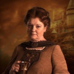

Conheça a casa Lufa-Lufa
Fundadora
Helga Hufflepuff: Uma das quatro fundadoras de Hogwarts, Helga Hufflepuff era conhecida por sua natureza gentil e inclusiva. Ela acreditava que todos mereciam uma chance justa e aceitava alunos de todas as origens. Helga também era famosa por suas habilidades culinárias, contribuindo para muitas das receitas ainda usadas em Hogwarts.
Símbolos
Animal: Texugo, simbolizando lealdade, proteção e tenacidade.
Cores: Amarelo e preto.
Elemento: Terra, representando estabilidade, paciência e perseverança.
Localização
Sala Comunal: A sala comunal da Lufa-Lufa está localizada perto das cozinhas de Hogwarts. É uma sala acolhedora e confortável, decorada em tons de amarelo e preto, com muitas plantas e uma atmosfera convidativa.
Dormitórios: Os dormitórios são igualmente acolhedores e decorados com as cores da casa, proporcionando um ambiente seguro e confortável para os alunos.
Qualidades Valorizadas
- Trabalho Duro: Lufanos são conhecidos por sua ética de trabalho e dedicação.
- Lealdade: Eles são extremamente leais a seus amigos e àqueles que amam.
- Paciência: Os membros da Lufa-Lufa são pacientes e compreensivos, prontos para ajudar e apoiar os outros.
- Justiça: Eles têm um forte senso de justiça e igualdade, valorizando a honestidade e a integridade.
Membros Notáveis
- Ninfadora Tonks
- Cedrico Diggory
- Pomona Sprout
- Newt Scamander
Cultura e Espírito da Casa
Lufanos são frequentemente descritos como leais, trabalhadores e justos. Eles têm uma natureza acolhedora e estão sempre dispostos a ajudar os outros. Embora possam ser subestimados por outros, a força e determinação dos Lufanos muitas vezes se destacam em momentos de necessidade.
A Lufa-Lufa é conhecida por seu espírito de comunidade e apoio mútuo. Os alunos são incentivados a trabalhar juntos e a valorizar a colaboração. O lema implícito da Lufa-Lufa poderia ser "Trabalho duro e lealdade".
Lufa-Lufa tem um relacionamento amigável com as outras casas, muitas vezes sendo vistos como os mediadores e pacificadores de Hogwarts. Eles são respeitados por sua natureza justa e ética de trabalho.